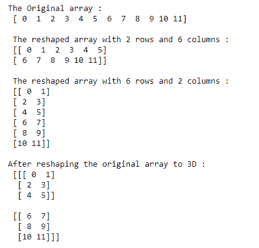
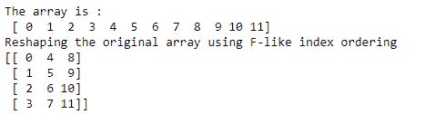
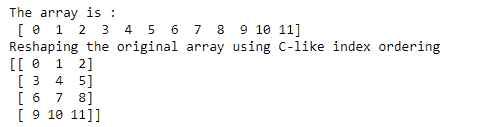

NumPy reshape()函数
原文：https://www.studytonight.com/numpy/numpy-reshape-function
在本教程中，我们将介绍 NumPy 库的reshape()功能。
单词“重塑”仅仅表示改变形状，这就是这个函数的用途
NumPy 库中的
reshape()功能主要用于改变数组的形状，而不改变其原始数据。因此
reshape()功能有助于为数组提供新的形状，这对你的用例非常有用。如果您想将数组的长形状转换为数组的宽形状，则使用该函数。
reshape()的语法:
使用该函数所需的语法如下:
numpy.reshape(a, newshape, order='C')
参数:
让我们看看这个函数的参数:
a 该参数表示要重新整形的输入数组。
新形状 新形状参数应该提供与原始形状兼容的形状。如果该参数的值是一个整数值，那么结果将是该长度的一维数组。如果形状尺寸是 -1 ，那么该值是从数组的长度和剩余尺寸推断出来的。
顺序 索引顺序参数在
reshape()功能中非常重要。基本上，它用于读取源数组的元素，然后使用这个索引顺序将元素放入重新整形的数组中。
索引顺序“ C ”是指读/写使用类似于 C 的索引顺序的元素(最后一个轴索引变化快，回到第一个轴索引变化最慢)
此外，索引顺序“ F ”指示读取/写入使用类似 Fortran 的索引顺序的元素(并且其中最后一个轴索引变化最慢，第一个轴索引变化最快)
那么“C”和“F”顺序不占用底层数组的内存布局，它们仅指索引的顺序。
最后但并非最不重要的一点索引顺序‘A’简单的意思是，只有当要重新整形的数组在内存中是连续的时候，才能以类似 Fortran 的索引顺序读/写元素，否则可以使用类似 C 的顺序。
返回值:
reshape()函数将返回重新变形的数组，而不改变原始数组的数据。
例 1:
让我们看一下这个函数的基本示例，其代码片段如下:
import numpy as np
a = np.arange(12)
print("The Original array : \n", a)
# shaping the array with 2 rows and 4 columns
a1= np.arange(12).reshape(2, 6)
print("\n The reshaped array with 2 rows and 6 columns : \n", a1)
# shaping the array with 4 rows and 2 columns
a2 = np.arange(12).reshape(6,2)
print("\n The reshaped array with 6 rows and 2 columns : \n", a2)
# Construction of a 3D array
a3 = np.arange(12).reshape(2, 3, 2)
print("\nAfter reshaping the original array to 3D : \n", a3)
上述代码的输出将是:

例 2:
在下面给出的代码片段中，我们将介绍如何使用reshape()函数进行类似 fortran 的索引排序，并检查其输出:
import numpy as np
x = np.arange(12)
print("The array is :\n",x)
y = np.reshape(x, (4, 3), order='F')
print("Reshaping the original array using F-like index ordering")
print(y)

例 3:
现在，我们将向您展示另一个代码片段，其中我们将对上述示例应用类似 C 的索引顺序，并输出相同的内容:
import numpy as np
x = np.arange(12)
print("The array is :\n",x)
y = np.reshape(x, (4, 3), order='C')
print("Reshaping the original array using C-like index ordering")
print(y)

摘要
本教程是关于 Numpy 库中的reshape()函数的。我们介绍了如何使用它的语法、参数和这个函数返回的值。为了理解这个函数的工作原理，我们还介绍了几个例子。